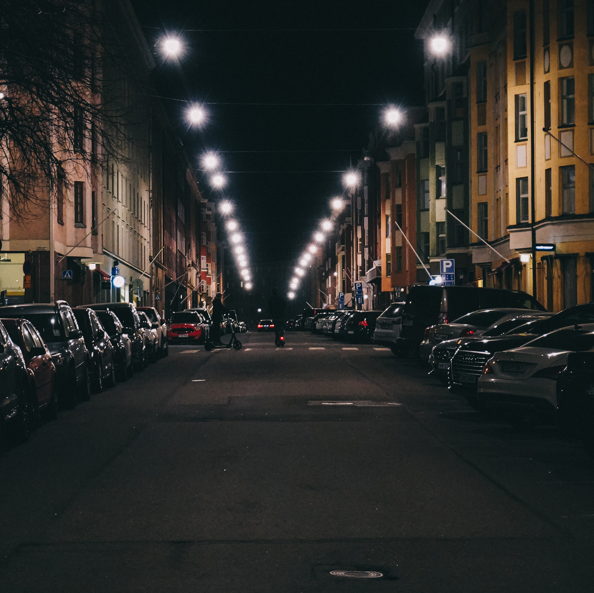
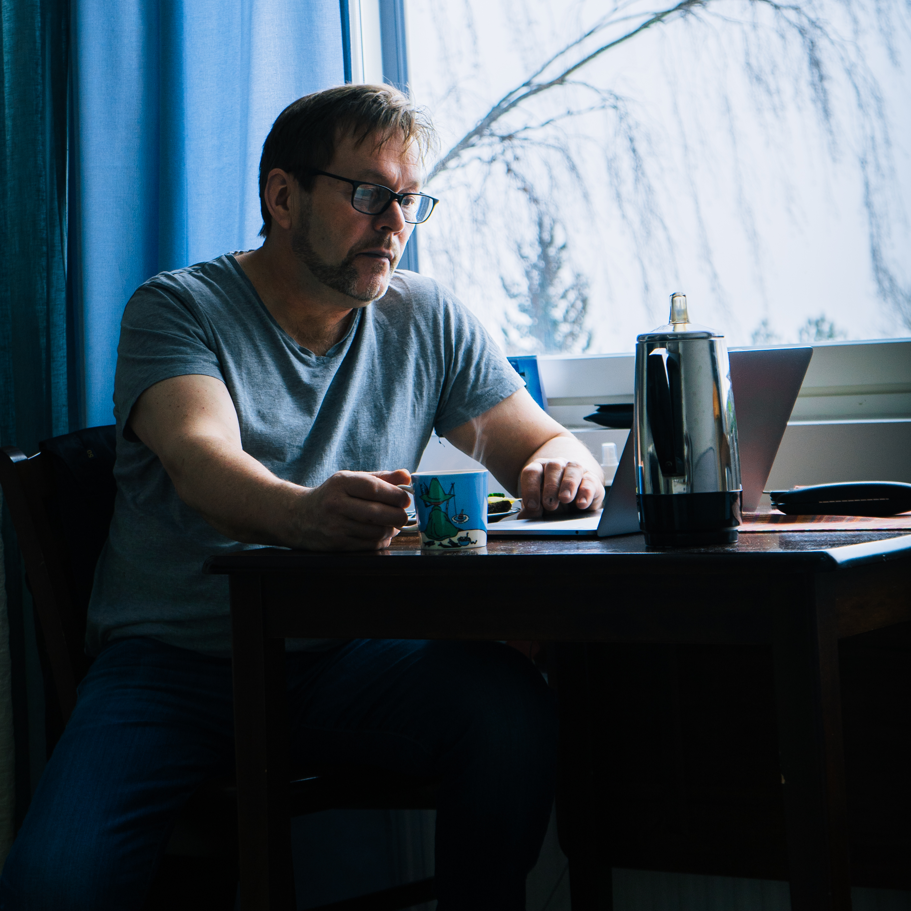

Etusivu | Harrastukset | Portfolio
Innostuin valokuvauksesta vuonna 2019 ja olen siitä lähtien aktiivisesti hyödyntänyt taitojani niin opinnoissa, työelämässä kuin harrastuksenakin. Kuvaan mieluiten ihmisiä ja erilaisia kaupunkimaisemia. Alla muutamia kuvia, jotka ovat täysin omaa tuotostani.


Musiikki on ollut elämässäni pidempään kuin jaksan muistaa. Molemmat vanhempani ovat muusikoita, äitini soittaa pianoa ja isäni kitaraa. Lapsena minulle todettiin keskivaikea hienomotoriikkahäiriö, joten vaikeat ja tarkuutta vaativat soittimet kuten kieli- ja torvisoittimet olivat poissa kuvioista. Isäni kuitenkin vaati, että aloittaisin kitaransoiton, jonka loppujen lopuksi tein. Se kuitenkin oli liian hankalaa itselleni. Samaan aikaan löysin basson ja aloin soittamaan bassoa aktiivisesti. Sen soittoa olen jatkanut tähän päivään saakka.
Hyvä ruoka on ollut lähellä sydäntäni aina. En koskaan ole ollut nirso ruoan suhteen ja olen aina halukas kokeilemaan uusia makuja maailman eri kolkista. Bravuureitani ovat:
| Ruoka | Vaikeustaso | Valmistusaika |
|---|---|---|
| Jerk Chicken | Keskivaikea | 9 tuntia |
| Yrttikuorrutettu lampaan sisäfilee | Vaikea | 30 minuuttia |
| Perinteinen makaronilaatikko | Helppo | noin 1,5 tuntia |
Sähköposti: mikko.mikkis.salminen@gmail.com
Puhelin: 0504102623